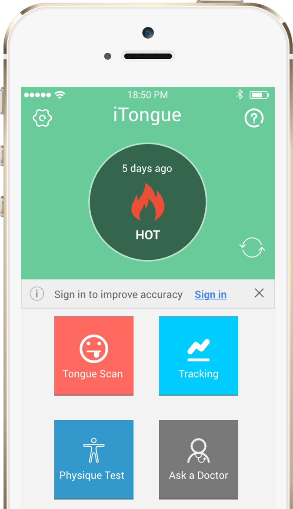

iTongue
iTongue is an app that will allow a user to automatically analyze and monitor their health status and get alerts on potential health risks, as well as advice on various lifestyle changes to improve their wellbeing. The info is generated based on a photo of the tongue taken by a smartphone.
Application testing
- Studied the requirements and prototype. Did necessary research on other applications to determine abstract standards the app should meet.
- Designed a testing plan and test cases / data for manual testing focused on usability and ensured that the main work flows are working correctly.
- Guided developers through the process of fixing bugs by enforcing accountability and efficiency, and did regression testing once the bug was fixed.
- Documented all of my work and generated a formal report for testing results for back up.